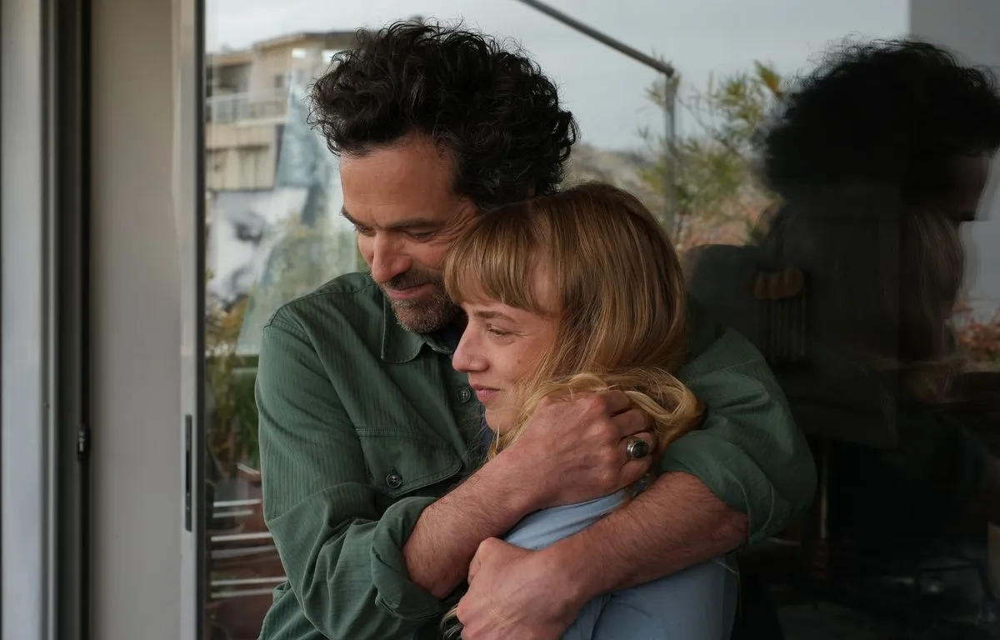

Imprimé sur papier recyclé, ne jetez pas ce journal sur la voie publique : donnez-le ou recyclez-le merci !

Paris(8ᵉ)
Des jeunes inscrits à Pôle emploi poussent les portes du Crillon
P.3
Réforme des retraites
La mobilisation à la française, un art qui séduit nos voisins
P.4

Télévision
Bas les masques sur les costumes de « Mask Singer »
P.10
